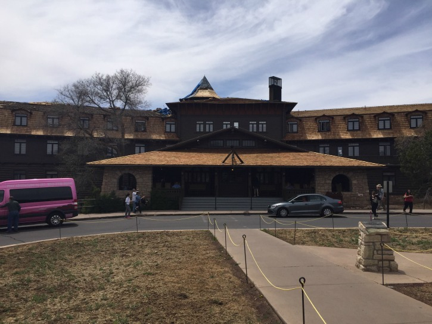
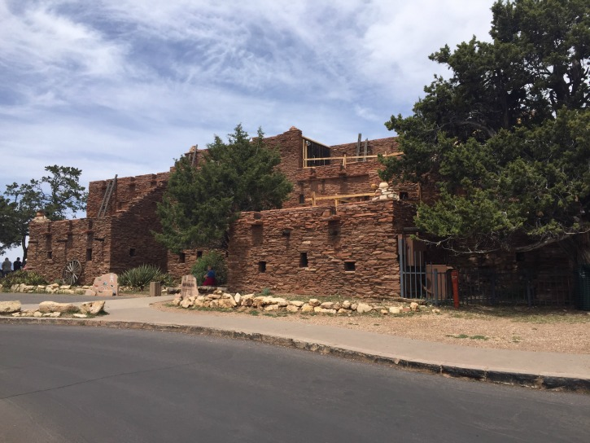
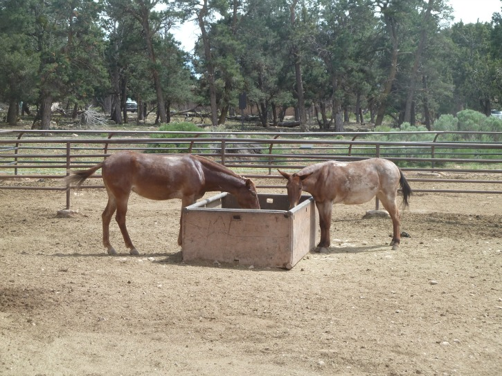
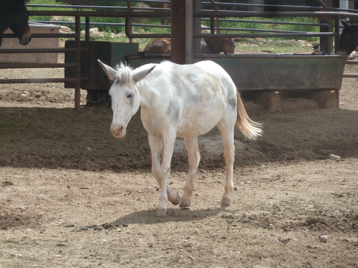
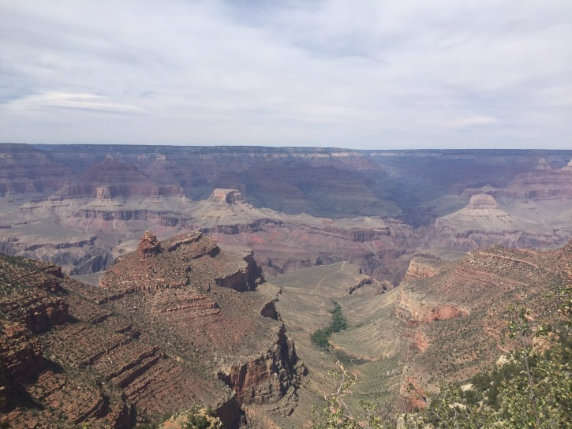

El Tovar
Another day walking by El Tovar.
Hopi House
The good old Hopi House
Grand Canyon

The view outside El Tovar (at the daytime)
Grand Canyon
Another nice view
Mules
Mules are hungry, just like us.
Mule
They also poop like us.
Mule
A White Mule
Mules
White Mule passes by Brown Mule
Train
Another nice Train shot
Grand Canyon Railway
The front of the Grand Canyon Railway. Majestic.
Grand Canyon Railway
Thirteen Boxcars and we were the one with the biggest dome
Grand Canyon Railway
Much better than being stuck in traffic.
Bright Angel Lodge
The other nice lodge at Grand Canyon Village (or is it El Tovar)
Grand Canyon
I've had enough, for this trip
Buckey O'Neill Cabin
Thought this was Becky, thank god it was Buckey.
Saying Goodbye to the Grand Canyon
We were ready to leave Grand Canyon Visitor Center and headed back to the Train Depot by bus. First we stopped at the General Store so Mom could get some gum. It was a blessing in disguise, because that particular bus driver was a total b-i-itch. She honked the horn multiple times and jerked the bus when she drove. After Mom got her gum, we hopped on another bus, heading back to the Train Depot.
Jenn saw 5 sets of twins at the Grand Canyon on May 11th, all under the age of 5
When we got back to the Train Depot, we had a couple of hours before we could board the Train back to Williams. Mom didn't want to go up the 47 steps to El Tovar, mainly because her shoulder's had been hurting for a while, but also because she did too much walking. Mom and Dad didn't need to do any additional major walking (especially going-up-steps walking), so Jenn and I went up. Jenn wanted to add to her step count so that's why she went. We spent a few minutes up there, mainly revisiting places we'd previously seen, but seeing it in a different light.
My shoulders are killing me
Once we were done there, we walked back down the 47 steps to the Bus Stop. There wasn't much to do, so with my last thing to see, I walked the length of the train (all 13 boxcars) to see the front of the train and get pictures. I didn't realize how close the train was to Bright Angel, so suddenly I had more to see. But first, I noticed the Mule Barn, where all the Mules that take people down the Grand Canyon. Unlike the rest of the Grand Canyon, which had a wonderful smell, the Mule Barn was the one place that smelled bad. It smelled like shit, literally. That's what happened when you have a bunch of mules pooping in the barn.
I then walked up to Bright Angel to see the Grand Canyon one last time. Though I would have loved to stay indefinitely, it was time to may my way back home. So after leaving Bright Angel, I returned to the Bus Stop, and waited out for the Train to start loading at 3:15. Eventually, we moved to a bench at the Train Depot because we didn't to stay at the Bus Stop.
My butts just tired for sitting on the bench.
A little after 3:00, the Train started boarding, just a little earlier than expected. We were really looking forward to getting back on the train, so we could finally sit on some comfy seats. Benches are not fun sitting on for extended periods of time. Finally, it was time to board the train back to Williams.
Grand Canyon Village
Grand Canyon Village, a town that sits on the Grand Canyon, contains residents who primarily serve the park, along with a school and library, among other things
Grand Canyon Village was developed by the National Park to serve visitors
In the early 1900s, Grand Canyon Village was born, centering about El Tovar and Bright Angel (or is it Bright Angel and El Tovar)
The oldest structure in the South Rim is Grand Canyon Village's Buckey O'Neill Cabin, named after William "Buckey" O'Neill, who among other things, was a Sheriff, member of Theodore Roosevelt's Rough Riders, and one of the men responsible for the Grand Canyon Railway. His nickname was because of his tendency to "buck the tiger" (play contrary to the odds).
So many people have died falling into the Grand Canyon that a book was published about the dangers of the Grand Canyon.
Many of the buildings found at Grand Canyon Village were built in the early 1900s, including El Tovar Hotel (1905), Hopi House (1905), Kolb Studio (1904) and Bright Angel Lodge (1935)
El Tovar is named after Spanish explorer Pedro de Tovar, who first reported rumors of a large river in the area, leading Garcia Lopez de Cardenas to become the first European to see the Grand Canyon. Another hotel had been named after Cardenas.
The Hopi House, built like the ancient Hopi Pueblo, was initially designed as a place for Native Americans in the region (mainly the Hopi), to see crafts.
Boredom: It happens, even at the Grand Canyon
Bounce with me, bounce with me (credit to Mom for that title)
Grand Canyon